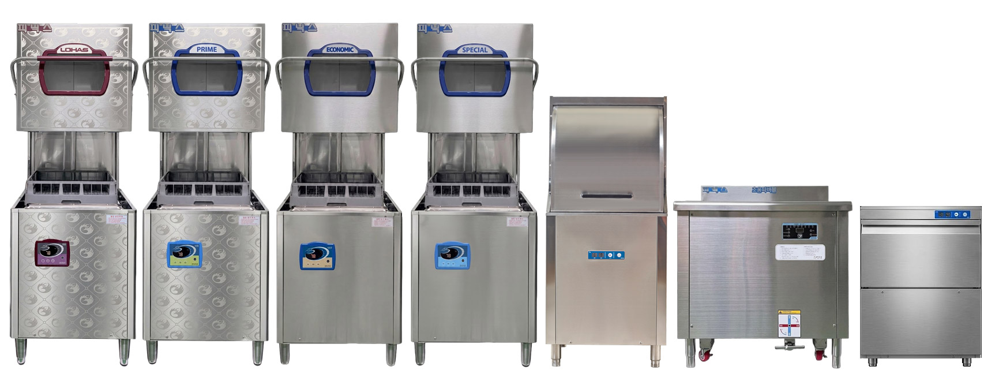
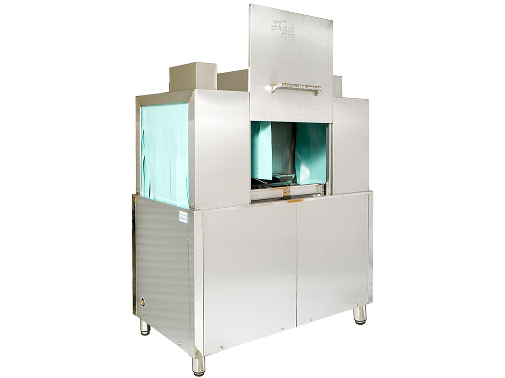

CHOOSE BY VOLUME
피닉스 식기세척기 비교
고객 수와 주방 환경에 따른 제품 선택
| 항목 | 스페셜 | 이코노믹 | 프라임 | 로하스 | 언더카운터 |
|---|---|---|---|---|---|
| 모델명 | PDW5400-AS | PDW5400-AE | PDW5400-AP | PDW5400-AL | PDW400 |
| 특징 | 보급형 | 중저가의 실속형 | 한 번 더 헹굼 기능 | 히터 2개 내장 | 작은 주방에서 사용 가능 |
| 표준세척능력 (1시간) 랙 | 52 | 52 | 52 | 52 | 52 |
| 표준세척능력 (1시간) 컵 | 1,872 | 1,872 | 1,872 | 1,872 | 1,872 |
| 표준세척능력 (1시간) 접시 | 1,040 | 1,040 | 1,040 | 1,040 | 1,040 |
| 표준세척능력 (1시간) 밥그릇 | 1,800 | 1,800 | 1,800 | 1,800 | 1,800 |
| 표준세척능력 (1시간) 식판 | 416 | 416 | 416 | 416 | 416 |
| 규격(mm) | 660×700×1380 | 660×700×1380 | 660×700×1380 | 660×700×1380 | 600×600×800 |
| 세척수용량 | 400 L/min | 400 L/min | 400 L/min | 400 L/min | 400 L/min |
| 헹굼수용량 | 30 L/min | 30 L/min | 30 L/min | 30 L/min | 30 L/min |
| 세척시간 | 30~90 sec | 30~90 sec | 30~90 sec | 30~90 sec | 20~99 sec |
| 헹굼시간 | 6~16 sec | 6~16 sec | 6~16 sec | 6~16 sec | 2~30 sec |
| 세척수온도 | 65℃ ~ 75℃ | 65℃ ~ 75℃ | 65℃ ~ 75℃ | 65℃ ~ 75℃ | 20℃ ~ 75℃ |
| 헹굼수온도 | 80℃ ~ 90℃ | 80℃ ~ 90℃ | 80℃ ~ 90℃ | 80℃ ~ 90℃ | 20℃ ~ 90℃ |
| 최대사용전력 | 3.75 kW | 3.75 kW | 3.75 kW | 4.55 kW | 4.6 kW |
| 사용전압 | 단상 220V, 60Hz | 단상 220V, 60Hz | 단상 220V, 60Hz | 단상 220V, 60Hz | 단상 220V, 60Hz |
| 에너지절감장치 | X | X | X | O | X |
| 세제잔류량 | 없음 | 없음 | 없음 | 없음 | 없음 |
| 안전장치 | O | O | O (3중) | O (3중) | O |
| 핵심 차별점 요약 | |||||
| 핵심 기능 | 기본 원터치 디지털 진행 표시 |
고급 부품/자재 가격 대비 성능 |
추가 헹굼(CLN 버튼) 파워모터, 자가진단 LED |
배수 폐열 70% 회수 헹굼통 히터(기존)+세척통 히터 |
작은 크기 도어 자동/수동 전환 3중 안전장치 |
| 내장히터 | 내장 (1개) | 내장 (1개) | 내장 (1개) | 내장 (듀얼히터) / 빠른 고온수 가열 | 내장 |
| 추천 대상 | 가장 저렴한 기본형 | 가성비 중시 | 헹굼 강화 + 안전 중시 | 외부 온수기 없이 사용 가능: 공간절약 | 소형 주방 공간이 좁은 업소 |
제품 이미지

| 항목 | 해치형 | 초음파버블(AU12) | 초음파버블(AU9) | 초음파버블(AU7) | 컨베이어형 |
|---|---|---|---|---|---|
| 모델명 | PDW450 | PDW5400-AU12 | PDW5400-AU9 | PDW5400-AU7 | PDW9001G |
| 특징 | 도어형(상향 개폐) | 초음파 + 버블 세척기 |
초음파 + 버블 세척기 |
초음파 + 버블 세척기 |
중·대용량 식당용 랙 컨베이어 |
| 표준세척능력 (1시간) 랙 | 52 | 52 | 40 | 30 | 180 |
| 표준세척능력 (1시간) 컵 | 1,872 | - | - | - | - |
| 표준세척능력 (1시간) 접시 | 1,040 | 1,040 | 780 | 580 | 3,600 |
| 표준세척능력 (1시간) 밥그릇 | 1,800 | 1,800 | 1350 | 1,000 | 6,300 |
| 표준세척능력 (1시간) 식판 | 416 | 416 | 312 | 234 | 600 |
| 규격(mm) | 660×700×1380 | 1200×710×980 | 900×710×980 | 700×710×980 | 1340×700×1550 |
| 세척수용량 | 400 L/min | - | - | - | - |
| 헹굼수용량 | 30 L/min | - | - | - | 18~20 L/min |
| 용량 | - | 185 L | 140 L | 110 L | - |
| 주파수 | - | 28 kHz | 28 kHz | 28 kHz | - |
| 발진기 출력 | - | 150 ~ 1,200 W | 150 ~ 1,100 W | 150 ~ 900 W | - |
| 진동자 | - | 50W × 24pcs | 50W × 22pcs | 50W × 16pcs | - |
| 세척시간 | 30~90 sec | 1~108 min (초음파) | 1~108 min (초음파) | 1~108 min (초음파) | - |
| 헹굼시간 | 6~16 sec | - | - | - | - |
| 버블시간 | - | 0 ~ 15 min | 0 ~ 15 min | 0 ~ 15 min | - |
| 1 Cycle | - | (초음파 + 버블) × 3회 | (초음파 + 버블) × 3회 | (초음파 + 버블) × 3회 | - |
| 최대 Cycle | - | 1 ~ 18 | 1 ~ 18 | 1 ~ 18 | - |
| 세척수온도 | 65℃ ~ 75℃ | 40℃ ~ 55℃ | 40℃ ~ 55℃ | 40℃ ~ 55℃ | 60℃ ~ 70℃ |
| 헹굼수온도 | 80℃ ~ 90℃ | - | - | - | - |
| 최대사용전력 | 4.6 kW | 2.5 kW (히터 1.5 kW) |
2.5 kW (히터 1.5 kW) | 2.5 kW (히터 1.5 kW) | 10.55 kW |
| 사용전압 | 단상 220V, 60Hz | 단상 220V, 60Hz | 단상 220V, 60Hz | 단상 220V, 60Hz | 3상 220V/380V, 60Hz |
| 에너지절감장치 | X (로하스 O) |
- | - | - | - |
| 세제잔류량 | 없음 | - | - | - | - |
| 활성제 | - | 1종 초음파 전용 | 1종 초음파 전용 | 1종 초음파 전용 | - |
| 안전장치 | O | 수위센서, 온도센서 | 수위센서, 온도센서 | 수위센서, 온도센서 | O |
| 핵심 차별점 요약 | |||||
| 핵심 기능 | 원터치 세척·헹굼 온도·시간·세제 조절 디지털 진행 표시 |
초음파+버블 개별 조절 최대 18사이클 과일·채소 모드 |
초음파+버블 개별 조절 최대 18사이클 과일·채소 모드 |
초음파+버블 개별 조절 최대 18사이클 과일·채소 모드 |
연속 랙 이송 고효율 대용량 세제·린스 사용 |
| 추천 대상 | 일반 식당·카페 표준형 수요 |
과일, 육류, 해산물, 기름때, 비린내, 립스틱자국, 각종 식기류 정밀 세척 | 과일, 육류, 해산물, 기름때, 비린내, 립스틱자국, 각종 식기류 정밀 세척 | 과일, 육류, 해산물, 기름때, 비린내, 립스틱자국, 각종 식기류 정밀 세척 | 중·대형 식당 호텔·급식소 |
컨베이어 이미지
